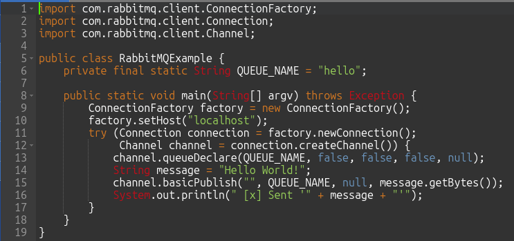

Transformando A Comunicação Assíncrona Com Filas Em Java
Transformando a Comunicação Assíncrona com Filas em Java
1. Introdução ao Gerenciamento de Filas:
Filas são estruturas de dados que seguem o princípio FIFO (First In, First Out), onde o primeiro elemento a entrar é o primeiro a sair. Elas são cruciais em sistemas de software porque permitem o gerenciamento eficiente de tarefas e recursos, garantindo que processos sejam executados na ordem correta. Em Java, as filas são implementadas através da interface Queue, que oferece métodos para inserir, remover e inspecionar elementos, sendo amplamente utilizadas em cenários como processamento de tarefas assíncronas, gerenciamento de threads e sistemas de mensagens.
O gerenciamento de filas em Java é amplamente utilizado em diversos cenários reais, como em sistemas de processamento de pedidos em e-commerce, onde as filas garantem que os pedidos sejam processados na ordem em que foram recebidos. Outro exemplo é em servidores web, onde as filas ajudam a gerenciar as requisições de clientes, assegurando que cada solicitação seja atendida de forma ordenada e eficiente. Além disso, em sistemas de mensagens assíncronas, como o Apache Kafka, as filas são essenciais para a transmissão de dados entre diferentes serviços, permitindo a escalabilidade e a resiliência do sistema. Em todos esses casos, a interface Queue de Java oferece métodos robustos para manipulação de filas, tornando-a uma ferramenta indispensável para desenvolvedores.
2. Conceitos Básicos de Filas em Java:
Em Java, filas são estruturas de dados que seguem o princípio FIFO (First In, First Out), onde o primeiro elemento a entrar é o primeiro a sair. A interface Queue do Java Collections Framework fornece métodos essenciais para a manipulação de filas, como add(), remove(), offer(), poll() e peek(), permitindo a adição, remoção e inspeção de elementos de forma eficiente. Filas são fundamentais para o gerenciamento de tarefas em sistemas de software, permitindo a organização e processamento sequencial de elementos. Elas são amplamente utilizadas em diversas aplicações, como filas de impressão, processamento de tarefas assíncronas, gerenciamento de threads e sistemas de mensagens, garantindo eficiência e ordem na execução de processos. A classe LinkedList implementa a interface Queue e é frequentemente usada para criar filas devido à sua eficiência na inserção e remoção de elementos. Já a classe PriorityQueue ordena os elementos com base em sua prioridade natural ou por um comparador fornecido, sendo ideal para cenários onde a ordem de processamento é determinada por prioridades específicas. Essas classes e interfaces são essenciais para o gerenciamento eficiente de tarefas e recursos em sistemas de software, proporcionando flexibilidade e desempenho na manipulação de filas.
Aqui estão alguns exemplos práticos de uso das classes Queue, LinkedList e PriorityQueue em Java:
1. Filas de Impressão: Utilizando LinkedList para gerenciar uma fila de documentos a serem impressos, onde os documentos são processados na ordem em que foram adicionados.
Método em linguagem Java para gerenciamento de filas de Impressão.
2. Processamento de Tarefas Assíncronas: Usando LinkedList para gerenciar tarefas que precisam ser executadas em segundo plano.
Método em linguagem Java para gerenciamento de filas de tarefas agendadas.
3. Gerenciamento de Threads: Utilizando PriorityQueue para gerenciar threads com diferentes prioridades.
Método em linguagem Java para gerenciamento de filas de tarefas concorrentes.
4. Sistemas de Mensagens: Usando LinkedList para gerenciar mensagens em um sistema de chat, garantindo que as mensagens sejam processadas na ordem correta.
Método em linguagem Java para gerenciamento de filas.
Esses exemplos mostram como as filas podem ser aplicadas em diferentes contextos para gerenciar tarefas e recursos de forma eficiente.
3. Software Gerenciador de Filas:
Um software gerenciador de filas, como RabbitMQ e Apache Kafka, é uma ferramenta essencial para a comunicação assíncrona entre diferentes partes de um sistema, permitindo a troca de mensagens de forma eficiente e confiável. RabbitMQ é um broker de mensagens que implementa o protocolo AMQP, ideal para cenários onde a entrega garantida e a roteamento de mensagens são cruciais. Já o Apache Kafka é uma plataforma de streaming distribuída que permite a publicação e assinatura de fluxos de dados em tempo real, sendo altamente escalável e adequada para o processamento de grandes volumes de dados. Ambos os sistemas são amplamente utilizados para garantir a resiliência, escalabilidade e eficiência na comunicação entre serviços em arquiteturas de micros-serviços e outras aplicações distribuídas.
Utilizar um software gerenciador de filas, como RabbitMQ ou Apache Kafka, oferece diversos benefícios, incluindo a capacidade de desacoplar componentes de um sistema, permitindo que eles se comuniquem de forma assíncrona e independente. Isso melhora a escalabilidade e a resiliência, pois os componentes podem continuar a funcionar mesmo que outros estejam temporariamente indisponíveis. Além disso, esses sistemas garantem a entrega confiável de mensagens, suportam grandes volumes de dados e oferecem mecanismos de balanceamento de carga e persistência, o que é crucial para manter a integridade e a eficiência em arquiteturas de micros-serviços e outras aplicações distribuídas.
4. Integração de Java com Software Gerenciador de Filas:
A integração de Java com software gerenciador de filas é facilitada por diversas bibliotecas e APIs robustas, como o RabbitMQ Java Client e a Kafka Java API. O RabbitMQ Java Client permite que desenvolvedores criem e gerenciem filas, enviem e recebam mensagens utilizando o protocolo AMQP, proporcionando uma comunicação eficiente e confiável entre serviços. Já a Kafka Java API oferece uma interface poderosa para interagir com o Apache Kafka, permitindo a publicação e consumo de mensagens em tempo real, além de suportar a criação de produtores e consumidores altamente escaláveis. Essas bibliotecas simplificam a implementação de sistemas distribuídos e garantem a entrega e processamento eficiente de mensagens em aplicações Java.
A produção e consumo de mensagens em Java são processos fundamentais para a comunicação assíncrona em sistemas distribuídos. Utilizando bibliotecas como RabbitMQ Java Client e Kafka Java API, os produtores enviam mensagens para filas ou tópicos, enquanto os consumidores as recebem e processam. Esse mecanismo permite que diferentes partes de um sistema se comuniquem de forma eficiente e independente, melhorando a escalabilidade e resiliência. Por exemplo, um produtor pode enviar atualizações de status para um tópico Kafka, e múltiplos consumidores podem processar essas atualizações em paralelo, garantindo que as mensagens sejam entregues e processadas de maneira ordenada e confiável.
Para usar o RabbitMQ Java Client em seu projeto, siga estes passos:
1. Adicionar a Dependência: Se você estiver usando Maven, adicione a dependência do RabbitMQ Java Client ao seu pom.xml:
Arquivo XM do Maven para incluir a dependência do Rabbit MQ.
2. Configurar a Conexão: Crie uma conexão com o servidor RabbitMQ:

Classe Java para conexão com o Rabbit MQ para enviar mensagens.
3. Consumir Mensagens: Crie um consumidor para receber mensagens da fila:
Classe Java para conexão com o Rabbit MQ para receber mensagens.
Esses exemplos mostram como configurar um produtor e um consumidor simples usando o RabbitMQ Java Client.
Certifique-se de que o servidor RabbitMQ esteja em execução e acessível no host especificado.
Para usar a Kafka Java API em seu projeto, siga estes passos:
1. Adicionar a Dependência: Se você estiver usando Maven, adicione a dependência do Kafka ao seu pom.xml:
Arquivo XM do Maven para incluir a dependência do Kafka.
2. Configurar o Produtor: Crie um produtor para enviar mensagens ao Kafka:
Classe Java para conexão com o Kafka para enviar mensagens.
3. Configurar o Consumidor: Crie um consumidor para receber mensagens do Kafka:
Classe Java para conexão com o Kafka para receber mensagens.
Certifique-se de que o servidor Kafka esteja em execução e acessível no host especificado. Esses exemplos mostram como configurar um produtor e um consumidor simples usando a Kafka Java API.
5. Tratamento de Erros e Reprocessamento:
O tratamento de erros e reprocessamento de filas são aspectos cruciais no gerenciamento de filas em Java, garantindo a robustez e confiabilidade do sistema. Quando uma mensagem falha ao ser processada, é essencial implementar mecanismos de retry, como reenvio automático após um intervalo de tempo ou redirecionamento para uma fila de dead-letter para análise posterior. Utilizando bibliotecas como RabbitMQ Java Client e Kafka Java API, é possível configurar políticas de reprocessamento e tratamento de erros, assegurando que mensagens problemáticas não sejam perdidas e possam ser reavaliadas ou corrigidas conforme necessárias. Esses mecanismos ajudam a manter a integridade dos dados e a continuidade do processamento, mesmo diante de falhas temporárias ou erros inesperados.
Para implementar o reprocessamento de mensagens em Java, você pode usar bibliotecas como RabbitMQ Java Client ou Kafka Java API.
Aqui está um exemplo básico usando RabbitMQ:
1. Configurar a Fila de Dead-Letter: Crie uma fila para mensagens que falharam no processamento.
channel.queueDeclare(\"dead-letter-queue\", true, false, false, null);
2. Configurar a Fila Principal com Dead-Letter Exchange: Configure a fila principal para redirecionar mensagens falhadas para a fila de dead-letter.
Método de comunicação de fila.
3. Consumir Mensagens com Tratamento de Erros: Implemente o consumidor para processar mensagens e redirecionar falhas.
Exemplo de código Java para tratamento de erro.
4. Reprocessar Mensagens da Fila de Dead-Letter: Crie um consumidor para reprocessar mensagens da fila de dead-letter.
Exemplo de código Java para tratamento de erro.
Esse exemplo básico mostra como configurar uma fila de dead-letter e implementar o reprocessamento de mensagens em RabbitMQ.
Para Kafka, você pode usar tópicos de dead-letter e configurar consumidores para reprocessar mensagens de forma semelhante.
RabbitMQ e Apache Kafka são ambos sistemas de mensageria, mas têm diferenças significativas em termos de arquitetura e casos de uso.
RabbitMQ é um broker de mensagens que implementa o protocolo AMQP, ideal para cenários onde a entrega garantida e o roteamento de mensagens são cruciais. Ele é excelente para tarefas que exigem confirmação de entrega e processamento de mensagens em tempo real. Já o Apache Kafka é uma plataforma de streaming distribuída, projetada para alta taxa de transferência e baixa latência, sendo ideal para o processamento de grandes volumes de dados em tempo real.
Kafka armazena mensagens em logs distribuídos, permitindo a reprocessamento e análise de dados históricos.
Em resumo, RabbitMQ é mais adequado para comunicação assíncrona e integração de sistemas, enquanto Kafka é ideal para streaming de dados e análise em tempo real.
6. Desempenho e Escalabilidade:
O desempenho e a escalabilidade no gerenciamento de filas em Java são cruciais para garantir a eficiência e a capacidade de resposta de sistemas distribuídos. Técnicas como o uso de filas em memória, balanceamento de carga e particionamento de filas podem otimizar o desempenho. Implementar filas de alta prioridade e dead-letter queues ajuda a gerenciar mensagens falhadas e garantir a continuidade do processamento. Além disso, ajustar parâmetros de configuração, como o tamanho da fila e o número de threads consumidoras, pode melhorar a taxa de processamento. Considerações sobre escalabilidade incluem implementar mecanismos de replicação e failover para garantir alta disponibilidade. Utilizar bibliotecas e APIs eficientes, como RabbitMQ Java Client e Kafka Java API, contribui para a resiliência do sistema, permitindo que ele lide com grandes volumes de mensagens de forma eficaz e mantenha a continuidade do serviço mesmo em caso de falhas.
7. Caso de Uso:
Vamos criar um caso de uso prático baseado em um cenário comum: o processamento de pedidos em um sistema de e-commerce.
Caso de Uso: Processamento de Pedidos em um Sistema de E-commerce
Contexto: Em um sistema de e-commerce, os pedidos dos clientes precisam ser processados de forma eficiente e na ordem em que foram recebidos.
Utilizaremos filas para garantir que cada pedido seja tratado corretamente, mesmo em situações de alta demanda.
Objetivo: Implementar um sistema de filas para gerenciar o processamento de pedidos, garantindo a ordem e a eficiência no tratamento dos mesmos.
Ferramentas Utilizadas:
-
Java: Linguagem de programação para implementar a lógica do sistema.
-
RabbitMQ: Software gerenciador de filas para comunicação assíncrona.
Passos para Implementação
1. Adicionar Dependência do RabbitMQ: Adicione a dependência do RabbitMQ ao seu projeto Maven:
Arquivo XM do Maven para incluir a dependência do Rabbit MQ.
2. Configurar a Conexão com RabbitMQ: Crie uma conexão com o servidor RabbitMQ:
Exemplo de código Java com conexão de fila para envio de mensagem.
3. Consumir Mensagens da Fila: Crie um consumidor para processar os pedidos:
Exemplo de código Java com conexão de fila para recibo de mensagem.
4. Explicação dos Passos
Adicionar Dependência: Incluímos a dependência do RabbitMQ no arquivo pom.xml para que possamos utilizar suas bibliotecas no projeto.
Configurar a Conexão: Configuramos a conexão com o servidor RabbitMQ e declaramos uma fila chamada orderQueue. Em seguida, enviamos uma mensagem representando um pedido.
Consumir Mensagens: Criamos um consumidor que se conecta à fila orderQueue e processa cada mensagem recebida, simulando o processamento de um pedido.
5. Benefícios do Uso de Filas
Desacoplamento: Os componentes do sistema podem funcionar de forma independente, melhorando a escalabilidade.
Resiliência: Mensagens podem ser armazenadas e processadas posteriormente em caso de falhas temporárias.
Ordem: Garantia de que os pedidos serão processados na ordem em que foram recebidos.
Esse exemplo prático demonstra como utilizar filas para gerenciar o processamento de pedidos em um sistema de e-commerce, garantindo eficiência e ordem no tratamento das solicitações dos clientes.
8. Conclusão:
O gerenciamento de filas é uma técnica essencial em sistemas de software modernos, permitindo a organização e processamento eficiente de tarefas e recursos. Utilizando a interface Queue do Java Collections Framework, desenvolvedores podem implementar filas de maneira robusta e flexível, aplicando-as em diversos cenários, como processamento de pedidos em e-commerce, gerenciamento de threads e sistemas de mensagens assíncronas. Ferramentas como RabbitMQ e Apache Kafka são fundamentais para a comunicação assíncrona entre diferentes partes de um sistema, garantindo a resiliência, escalabilidade e eficiência na troca de mensagens.
O futuro do gerenciamento de filas promete avanços significativos, impulsionados por novas tecnologias e tendências emergentes, como a integração com Inteligência Artificial e Machine Learning para otimizar o gerenciamento de filas, prevendo padrões de tráfego e ajustando dinamicamente os recursos para melhorar a eficiência e reduzir latências; a adoção crescente de arquiteturas serverless, onde o gerenciamento de filas será ainda mais crucial para orquestrar funções e serviços de maneira eficiente, sem a necessidade de gerenciar servidores subjacentes; o foco em escalabilidade horizontal, permitindo que sistemas de filas lidem com volumes de dados cada vez maiores, distribuindo a carga de trabalho entre múltiplos nós e garantindo alta disponibilidade; a incorporação de mecanismos avançados de criptografia e auditoria para proteger informações sensíveis e garantir a conformidade com regulamentações; a integração de ferramentas de automação e orquestração, como Kubernetes, para facilitar a implantação, monitoramento e escalabilidade de aplicações distribuídas; e o desenvolvimento contínuo de APIs e SDKs para facilitar a integração de sistemas de filas com diversas linguagens de programação e plataformas, promovendo a interoperabilidade e flexibilidade. Em resumo, o gerenciamento de filas continuará a evoluir, desempenhando um papel vital na construção de sistemas de software resilientes, escaláveis e eficientes, e a adoção de novas tecnologias e práticas emergentes garantirá que as filas permaneçam uma ferramenta indispensável para desenvolvedores e arquitetos de sistemas.